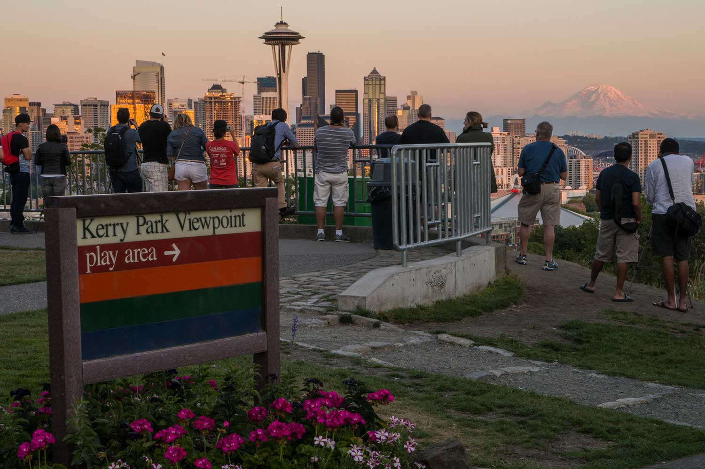

Kerry Park
Kerry Park offers one of the best panoramic views of Seattle's skyline, with Mount Rainier often visible in the background. It's a must-see spot for photos and sunsets.
Learn moreDiscover some of Seattle's most famous and scenic spots worth visiting.
Nestled in the Pacific Northwest, Seattle is famous for its vibrant culture, scenic views, and a perfect mix of city life and nature. From stunning parks to quirky landmarks, there’s something for everyone to enjoy.
Kerry Park offers one of the best panoramic views of Seattle's skyline, with Mount Rainier often visible in the background. It's a must-see spot for photos and sunsets.
Learn more
Alki Beach is a beautiful stretch of sand offering stunning views of downtown Seattle and the Olympic Mountains. It’s perfect for a day of sun and relaxation.
Learn moreHidden under the Aurora Bridge, the Fremont Troll is a quirky, massive sculpture clutching a real Volkswagen Beetle. It's one of Seattle's most beloved landmarks.
Learn moreGas Works Park offers incredible views of Seattle’s skyline and Lake Union. It’s a favorite spot for picnics, kite flying, and watching the city lights during sunset.
Learn more